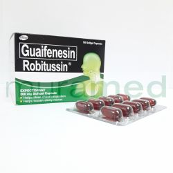
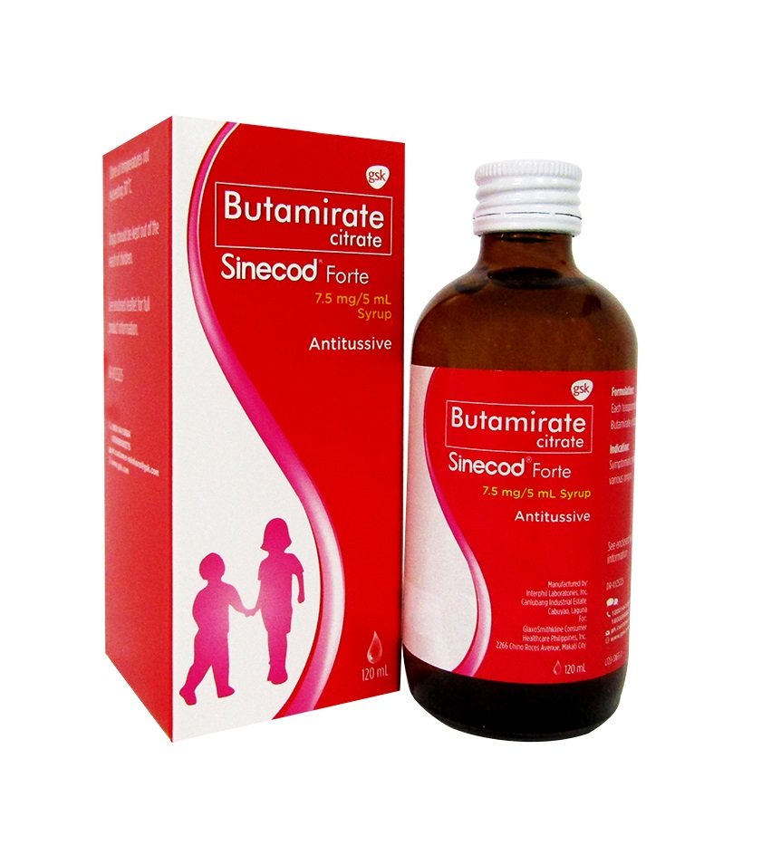

Medicine Guide For Cough

• Relieves chest congestion and loosens mucus.
• Eases cough due to cold or allergies.
🔥 How It Works:
Contains guaifenesin, an expectorant that thins and loosens mucus.
💡 Common Use:
For coughs associated with colds or minor throat irritation.
Pfizer Consumer Healthcare. (n.d.). Robitussin Product Information.
• Adults: 1-2 tablets every 4-6 hours.
• Children: Consult a doctor for dosage.
🚫 Usage Limit:
Do not exceed 6 doses in 24 hours.
✅ Usage Tip:
Drink plenty of fluids to help loosen mucus.
ROBITUSSIN-TABLET
Description
💊 Purpose:• Relieves chest congestion and loosens mucus.
• Eases cough due to cold or allergies.
🔥 How It Works:
Contains guaifenesin, an expectorant that thins and loosens mucus.
💡 Common Use:
For coughs associated with colds or minor throat irritation.
Pfizer Consumer Healthcare. (n.d.). Robitussin Product Information.
Guide
✅ Dosage:• Adults: 1-2 tablets every 4-6 hours.
• Children: Consult a doctor for dosage.
🚫 Usage Limit:
Do not exceed 6 doses in 24 hours.
✅ Usage Tip:
Drink plenty of fluids to help loosen mucus.
ROBITUSSIN-CHILDREN
Description
💊 Purpose:• Relieves cough
• Reduces throat irritation.
🔥 How It Works:
Contains guaifenesin to thin mucus and dextromethorphan to suppress cough.
💡 Common Use:
For cough relief in children.
Pfizer Consumer Healthcare. (n.d.). Robitussin Children’s Cough Syrup.
Guide
✅ Dosage:• Children (6-12 years): 5-10 mL every 4 hours.
• Children (2-5 years): 2.5-5 mL every 4 hours.
🚫 Usage Limit:
Do not give to children under 2 years without a doctor’s advice.
✅ Usage Tip:
Use the provided measuring device for accurate dosage.
RUBITUSSIN-ADULT
Description
💊 Purpose:• Relieves cough and chest congestion.
• Reduces mucus build-up.
🔥 How It Works:
Contains guaifenesin and dextromethorphan for dual relief.
💡 Common Use:
For adults with persistent cough.
Pfizer Consumer Healthcare. (n.d.). Robitussin Adult Cough Syrup.
Guide
✅ Dosage:Adults: 10 mL every 4 hours.
Maximum: 60 mL in 24 hours.
🚫 Usage Limit:
Do not exceed the recommended dose.
✅ Usage Tip:
Take with food if it upsets your stomach.
PLEMEX
Description
💊 Purpose:• Relieves cough due to colds, flu, and bronchitis.
• Loosens mucus and clears airways.
🔥 How It Works:
Contains lagundi (Vitex negundo) with expectorant properties.
💡 Common Use:
For cough with phlegm.
Pascual Laboratories. (n.d.). Plemex Cough Syrup.
Guide
✅ Dosage:• Adults: 5 mL syrup 3-4 times daily.
• Children: 2.5 mL syrup 3-4 times daily.
🚫 Usage Limit:
Consult a doctor if symptoms persist.
✅ Usage Tip:
Shake well before use.

TUSERAN FORTE
Description
💊 Purpose:• Relieves dry, non-stop cough.
• Reduces throat pain and itchiness.
🔥 How It Works:
Combines dextromethorphan, phenylpropanolamine, and paracetamol.
💡 Common Use:
For dry cough with throat irritation.
Unilab. (n.d.). Tuseran Forte.
Guide
✅ Dosage:• Adults: 1 capsule every 6 hours.
• Children: Not recommended for children.
🚫 Usage Limit:
Do not exceed 4 doses in 24 hours.
✅ Usage Tip:
Avoid using with other decongestants.
SOLMUX-SYRUP
Description
💊 Purpose:• Relieves cough with sticky phlegm.
• Clears airway congestion.
🔥 How It Works:
Contains carbocisteine, a mucolytic agent.
💡 Common Use:
For cough with thick mucus.
Unilab. (n.d.). Solmux Syrup.
Guide
✅ Dosage:• Adults: 5 mL every 8 hours.
• Children: 2.5-5 mL every 8 hours.
🚫 Usage Limit:
Do not exceed 3 doses in 24 hours.
✅ Usage Tip:
Take with food to prevent stomach upset.
SOLMUX-TABLET
Description
💊 Purpose:• Treats cough with thick phlegm.
• Reduces airway congestion.
🔥 How It Works:
Contains carbocisteine, a mucolytic agent.
💡 Common Use:
For productive cough.
Unilab. (n.d.). Solmux Tablet.
Guide
✅ Dosage:• Adults: 1 tablet every 8 hours.
• Children: Not recommended.
🚫 Usage Limit:
Maximum of 3 doses in 24 hours.
✅ Usage Tip:
Take with plenty of water.

NEOZEP
Description
💊 Purpose:• Relieves cough, cold, and flu symptoms.
• Reduces nasal congestion.
🔥 How It Works:
Combines phenylephrine, paracetamol, and chlorphenamine.
💡 Common Use:
For cold and cough relief.
Unilab. (n.d.). Neozep Forte.
Guide
✅ Dosage:• Adults: 1 tablet every 6 hours.
• Children (6-12 years): ½ tablet every 6 hours.
🚫 Usage Limit:
Do not exceed 4 doses in 24 hours.
✅ Usage Tip:
Avoid alcohol while taking this medication.

AMBROXOL
Description
💊 Purpose:• Clears mucus from the airways.
• Treats respiratory conditions with thick phlegm.
🔥 How It Works:
Contains ambroxol hydrochloride, a mucolytic agent.
💡 Common Use:
For cough with phlegm.
Sanofi. (n.d.). Ambroxol Mucosolvan.
Guide
✅ Dosage:• Adults: 30 mg tablet 2-3 times daily.
• Children: 7.5 mg syrup every 8 hours.
🚫 Usage Limit:
Do not exceed the recommended dose.
✅ Usage Tip:
Take after meals.

• Relieves dry cough.
• Reduces throat irritation.
🔥 How It Works:
Contains butamirate citrate, a cough suppressant.
💡 Common Use:
For dry, irritating cough.
Novartis. (n.d.). Sinecod Product Information.
• Adults: 1 tablet 3 times daily.
• Children: Consult a doctor.
🚫 Usage Limit:
Do not exceed 3 doses in 24 hours.
✅ Usage Tip:
Swallow tablets whole with water.
BUTAMIRATE-SINECOD
Description
💊 Purpose:• Relieves dry cough.
• Reduces throat irritation.
🔥 How It Works:
Contains butamirate citrate, a cough suppressant.
💡 Common Use:
For dry, irritating cough.
Novartis. (n.d.). Sinecod Product Information.
Guide
✅ Dosage:• Adults: 1 tablet 3 times daily.
• Children: Consult a doctor.
🚫 Usage Limit:
Do not exceed 3 doses in 24 hours.
✅ Usage Tip:
Swallow tablets whole with water.

BACTIDOL
Description
💊 Purpose:• Relieves sore throat and bacterial infections.
• Provides antibacterial and antifungal protection.
🔥 How It Works:
Contains hexetidine, dichlorobenzyl alcohol, amylmetacresol, or guaifenesin.
💡 Common Use:
For sore throat and oral infections.
J&J. (n.d.). Bactidol Product Information.
Guide
✅ Dosage:• Gargle: 2x daily.
• Lozenges: 1 every 2-3 hours (max: 8/day).
🚫 Usage Limit:
Do not exceed the recommended dose.
✅ Usage Tip:
Avoid eating or drinking immediately after use.